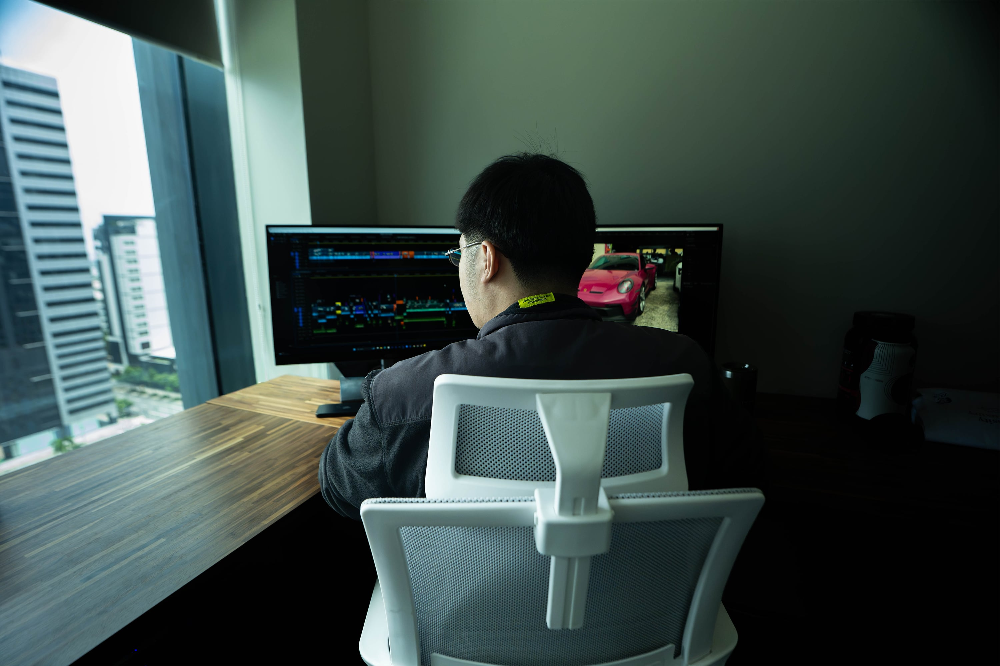

PROJECT 01
PROJECT 01Cinematic Video Editing
Vlogs, branded content, short-form storytelling, pacing, sound, and finishing.
Watch project ↗Video editor and visual storyteller shaping raw footage into stories with rhythm, atmosphere, and purpose. From cinematic edits to film restoration, motion graphics, and design.

A selection of creative disciplines and projects. Replace these sample cards with your own best work, reels, and case studies.
PROJECT 01Vlogs, branded content, short-form storytelling, pacing, sound, and finishing.
Watch project ↗ PROJECT 02
PROJECT 02Image cleanup, color grading, stabilization, pacing, and visual enhancement for classic films.
View restoration ↗ PROJECT 03
PROJECT 03On-location coverage, visual composition, camera operation, and story-driven footage.
Watch project ↗ PROJECT 04
PROJECT 04Animated titles, social graphics, thumbnails, posters, and supporting visual assets.
View design work ↗Template note: project images and links above are examples. Replace them with your own authorized work before sharing this portfolio professionally.
I’m Lord Vincent Yana, a video editor and creative professional focused on turning footage into clear, engaging visual stories. My work spans editing, videography, classic film restoration, color grading, animation, and graphic design.
I care about the details that make a piece feel finished: the timing of a cut, the balance of a grade, the clarity of a title, and the emotional flow from one shot to the next.
Flexible creative support for teams, brands, creators, and production workflows.
Story structure, pacing, sound, captions, revisions, and delivery.
Cleanup, color correction, stabilization, and careful visual refinement.
Animated titles, graphic assets, posters, thumbnails, and social content.
Camera work and purposeful footage captured for the edit.
I'm open to long-term opportunities, creative collaborations, and projects where thoughtful editing and visual storytelling matter.
Before publishing: replace the sample email and social links with your real contact details.